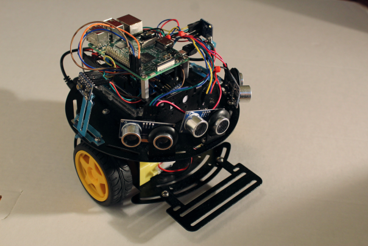

Tech
This is a selection of technology / computer science related projects that I have worked on. You can also find me on GitHub.
Ultrasonic Self-Driving Car
As the capstone project of my undergraduate degree, I designed and built a small prototype of a self driving car. More information is available on the academic poster that I presented during my live demo of the car at Queen’s University’s Creative Computing show.
Temperature Tweets (IoT Project)
This was a group project for an upper year computer science course at Queen’s. A thermosensor connected to an Arduino reads the current temperature, then the Arduino sends the temperature data to a Carriots server. Carriots then sends this data out as a tweet.
You can read more details on this slideshow, and see the Twitter account (inactive after the class was over).
The Elastic Controller (IoT Project)
My first introduction to Arduino & related technology was in a creative computing course at Queen’s. My group’s final project was a stretching synthesizer, comprised of an Arduino, rubber stretch sensors, and a program in Max MSP. You can see it in action in this video.